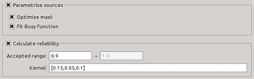

The settings below control the parametrisation and reliability calculation steps.
| Module / Parameter | Type | Values | Description |
|---|---|---|---|
| steps.doParameterise | bool | true, false | Run the mask optimisation and parametrisation module? |
| parameters.optimiseMask | bool | true, false | Run the mask optimisation algorithm to achieve more accurate flux measurements. |
| parameters.fitBusyFunction | bool | true, false | Fit the Busy Function (Westmeier et al. 2013) to the integrated spectrum for more accurate parametrisation. |
| Default values are set in bold-face font. | |||
| Module / Parameter | Type | Values | Description |
|---|---|---|---|
| steps.doReliability | bool | true, false | Use negative detections to calculate reliability? |
| reliability.relThresh | float | 0.0 – 1.0; default: 0.9 | Discard sources whose reliability is below this value. |
| reliability.kernel | string | list of kernel sizes; default: [0.15, 0.05, 0.1] | Size of 3D smoothing kernel in log(parameter) space (see reliability.parSpace). |
| reliability.parSpace | string | list of parameters; default: ['ftot', 'fmax', 'nrvox'] | Defines 3D parameter space in which to calculate reliability. |
| reliability.fMin | float | ≥ 0.0 | Minimum total flux for a source to be reliable. |
| Default values are set in bold-face font. Parameters on a red background are not accessible through the user interface. | |||